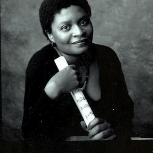
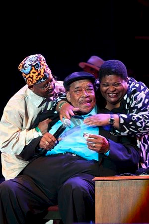

Deitra FarrInterview by Michael Limnios, 2012 Я решила стать певицей в возрасте 6-7 лет, после того как по телевизору увидела The Supremes. Благодаря блюзу я посмотрела весь мир. Ребенком я и не представляла, что буду петь в других странах. А теперь – я выступала уже более чем в 30 разных странах!.. Для меня это счастье - странствовать по миру.- Какой период вашей жизни вы назовете самым интересным – и почему? Самыми интересными были годы юности. Я стала жить с отцом после смерти моей матери. Он мне позволял быть свободной. Он мне доверял и позволял делать то, что я хотела. Он отпускал меня в ночные клубы и на концерты. И там мне повезло услышать и познакомиться с величайшими исполнителями нашего времени. Со всеми: от Майкла Джексона до Джеймса Брауна, Эла Грина и «Темптейшинз». Мне удалось пообщаться с ними! Martha Reeves водила меня повсюду с собой целую неделю, пока она выступала в Чикаго в Mister Kelly's. Я тогда еще была старшеклассницей, мне было 16. Если бы мой отец сказал «нет», ничего из этого не случилось бы. - С кем из артистов вы работали на сцене профессионально, и кого из них считаете своим другом? Я работала с Erwin Helfer, Sam Lay, Lil' Ed, Otis Grand, Zora Young, Johnny Rawls, Jody Williams, Willie Kent, Louis Myers, Karen Carroll, Chicago Beau, Magic Slim.... Столько имен – сразу всех не вспомнить. Но я дружу с ними со всеми! - Что вы считаете лучшим моментом своей карьеры, а что - худшим? Лучший момент карьеры у меня еще впереди… А худший – это просто, когда я не работаю.  Я пою блюз, соул и госпел – я пою хорошую музыку. В музыке нет какого-то секрета, просто надо играть то, что чувствуешь. Сначала я была исполнительницей соул. Я и сейчас соул-певица. Еще я пою музыку госпел. Для меня все это вместе: блюз, соул и госпел. Я бы спела джаз, если бы кто-то меня попросил. Не обязательно испытывать тоску, чтобы играть блюз. В какие-то моменты жизни мы все грустим. А музыка помогает лучше себя чувствовать - поэтому музыка целебна. Я бы сказала, вся музыка, любая музыка – способна исцелять. (На снимке: Lil'Ed, James Cotton и Deitra Farr, 2014 г.)- Какие три выступления вы вспоминаете с особым удовольствием? Выступление с госпел-группой в Мексико-Сити… Выступление в программе Blues Cruise на корабле в Карибском море… Концерт с Сэмом Леем в Бирнмингеме, в Алабаме. В зале присутствовал один из идолов моей юности: Eddie Kendricks ( of The Temptations). - Из артистов, ныне живущих или умерших, с кем бы вы хотели встретиться и поджемовать? С Little Walter! - Какие-то блюзовые стили увядают, но блюз всегда остается с нами. Почему, как вы считаете? Это не то, о чем я как-то много думаю. Это музыкальный стиль, а не мистика. Это просто музыка! - Что изменилось в музыке за то время, что вы работаете? На блюзовой сцене стало меньше людей, которые действительно могут играть эту музыку хорошо. - Что вы посоветуете начинающим музыкантам, подумывающим начать карьеру в этом деле? Любите то, что вы выбрали, и просто делайте это! - Какой жизненный опыт позволяет вам быть хорошим артистом? Я не знаю, хороший ли я артист. Я стараюсь им стать. Я стараюсь быть честной. На сочинение песен меня вдохновляет то, что я пережила, или то, о чем мне рассказывали. Это может быть и про мою жизнь, и про чью-то другую. Меня никто не учил сочинять песни. Но я восхищаюсь теми, кто умеет выстроить сюжет, рассказать историю. Мои песни, мои сочинения, мои картины – идут из моей души. - Все-таки, ваша музыка и песни, картины и стихи – они идут от сердца, от ума, или от души? I give God all the credit!!! (Все – от Бога!!!) |